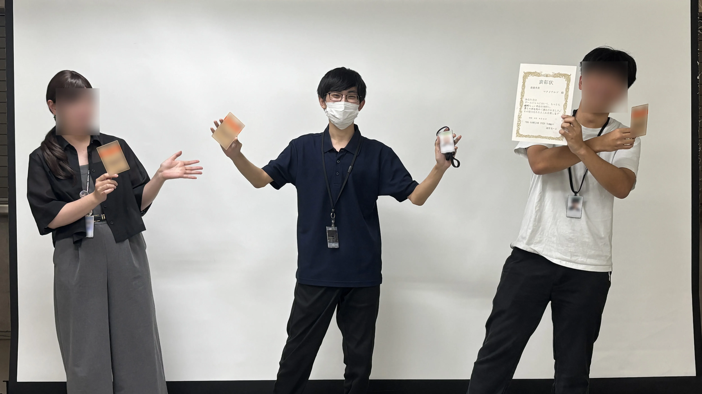
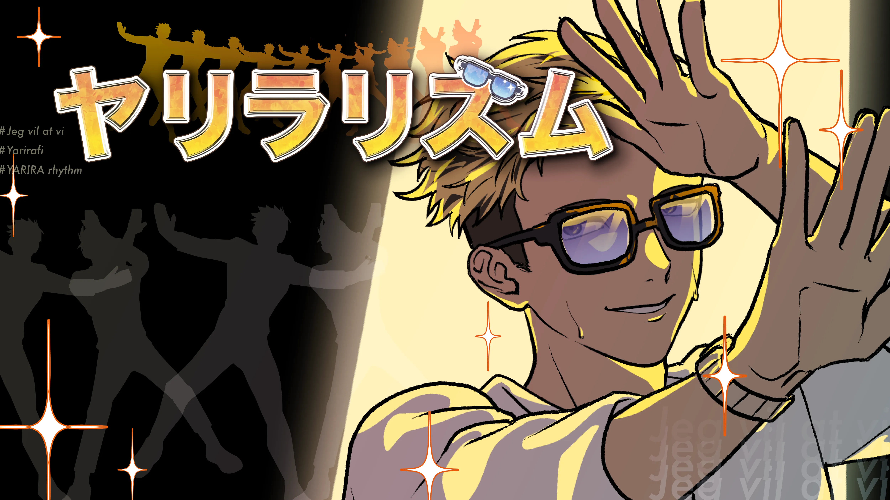
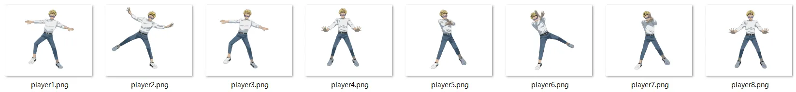
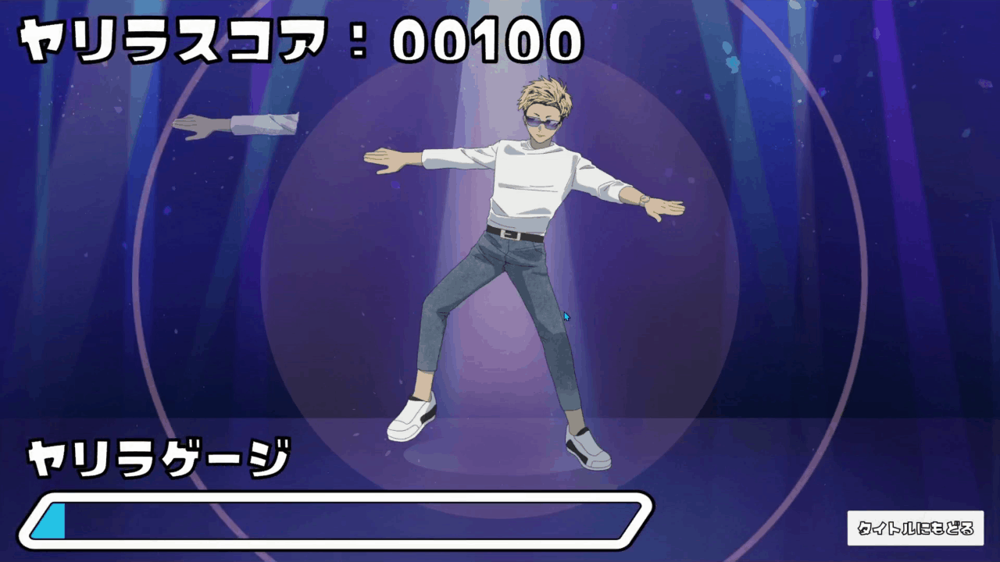
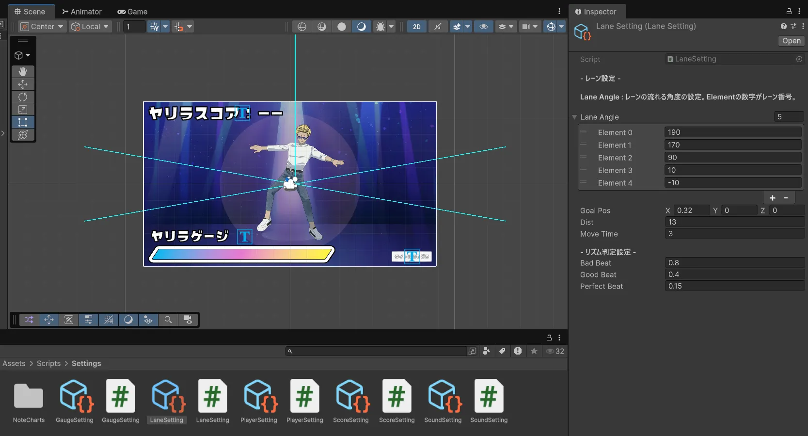

プランナー・サウンド・デザイナーと連携して制作。
唯一のプログラマーとして、ゲーム全体のプログラムを担当しました。
ヤリラリズム
受賞
学内で開催されたゲームジャムにて、全チームの中で最も多くの票を獲得し、「最優秀賞」を受賞しました。
※4人チームで制作しましたが、1人が用事で早退したため、写真には3人のみ写っています。


| 開発期間 | 2026/08/14 ~ 08/16 (3日間) |
| 開発人数 | 4人 |
| プレイ人数 | 1人 |
| ジャンル | |
| 使用技術 |
目的
- プランナー・サウンド・デザイナーとの役割分担やチーム開発の進め方を学ぶ。
- プログラマー1人で3日間の開発を完遂し、短期間でゲームを完成させる開発力を身につける。
担当
- ゲーム全体のプログラム実装
- リズム判定・ノーツ管理・人体パズルシステムなどの実装
- プランナーが調整しやすい設計・実装
学内ゲームジャム
学内ゲームジャムで制作した作品です。
チームとテーマは、当日即興で決められる環境で開発しました。
テーマ
テーマ
きん
連想
金髪
連想
ヤリラフィー
制作風景

プレゼン資料
3日目の最終発表で使用したプレゼン資料です。
こだわりポイント
踊りのタイミングを逆算する人体パズル
ヤリラフィーの踊りは、8枚の画像を一定間隔で切り替えて表現しています。


- ノーツが画面中央へ到達するまでの時間
- 画像の切り替え間隔
これにより、中央で踊るキャラクターに体パーツがぴったり重なる、人体パズルのようなデザインを実現しています。

プランナーが調整しやすい設計
3日間という短い制作期間で完成させるため、プランナーとの役割分担を重視しました。
プランナーがコードを変更せず、譜面やゲームバランスを調整できるよう、
ScriptableObjectを使用して各種パラメータを全てInspectorから変更できるようにしました。
その結果、調整作業をプランナーに分担してもらい、自分は実装に集中できる環境を構築しました。
